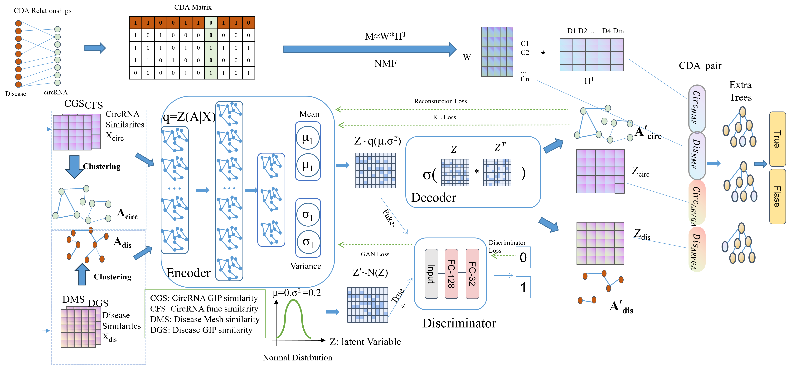

CircRNA is being discovered to play an increasing number of roles in the occurrence of disease.
Accurately identifying those CircRNAs associated with diseases is crucial for further CircRNA research.
In recent years, an increasing number of computational methods have been proposed to predict CircRNA-Disease Associations (CDA).
Here we propose a novel method for predicting CDA, which comprehensively considers generating linear features using Non-negative Matrix Factorization (NMF) and obtaining non-linear features
using Adversarially Regularized Variational Graph Autoencoder (ARVGA), finally employ an EXTRA Trees classifier to predict CDA. In the gold standard dataset CircR2Disease,
our model achieved a prediction accuracy of 94.8% and an AUC of 0.984. Furthermore, ablation experiments and classifier experiments fully demonstrate the effectiveness
and robustness of the features extracted by our model. Independent dataset test results validate generalization ability of our model. Our case study results indicate that
19 different circRNAs among the top 20 predicted score of CDA pairs have been confirmed in the relevant literature to
be associated with Hepatocellular Carcinoma. These results indicate that our model can be used as a useful prediction tool to predict possible CircRNAs for complex diseases.
DACC方法的优势
DACC方法相比其他传统的序列分析方法具有多个优势。首先，它能够捕捉到序列中的全局顺序信息和局部属性，从而提供更全面的序列描述。其次，DACC方法具有高度的灵活性和可扩展性，可以根据具体的研究需求进行定制和优化。最后，DACC方法已经被广泛应用于多种生物信息学分析中，并取得了显著的研究成果，证明了其在生物序列分析中的有效性和可靠性。
综上所述，DACC是Pse-in-One中一种重要的基于二核苷酸的自交叉协方差方法，用于提取和分析生物序列中的复杂特征。该方法在生物信息学领域具有广泛的应用前景和重要的研究价值。